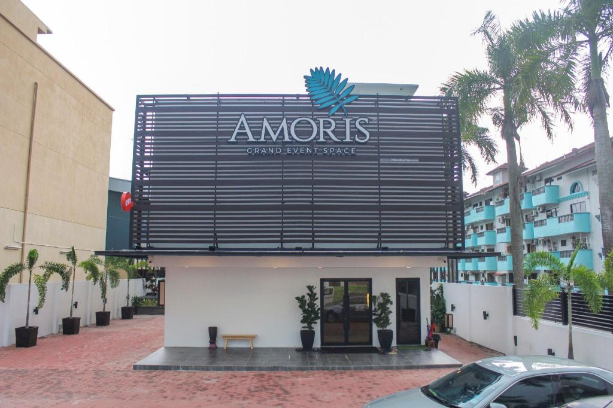
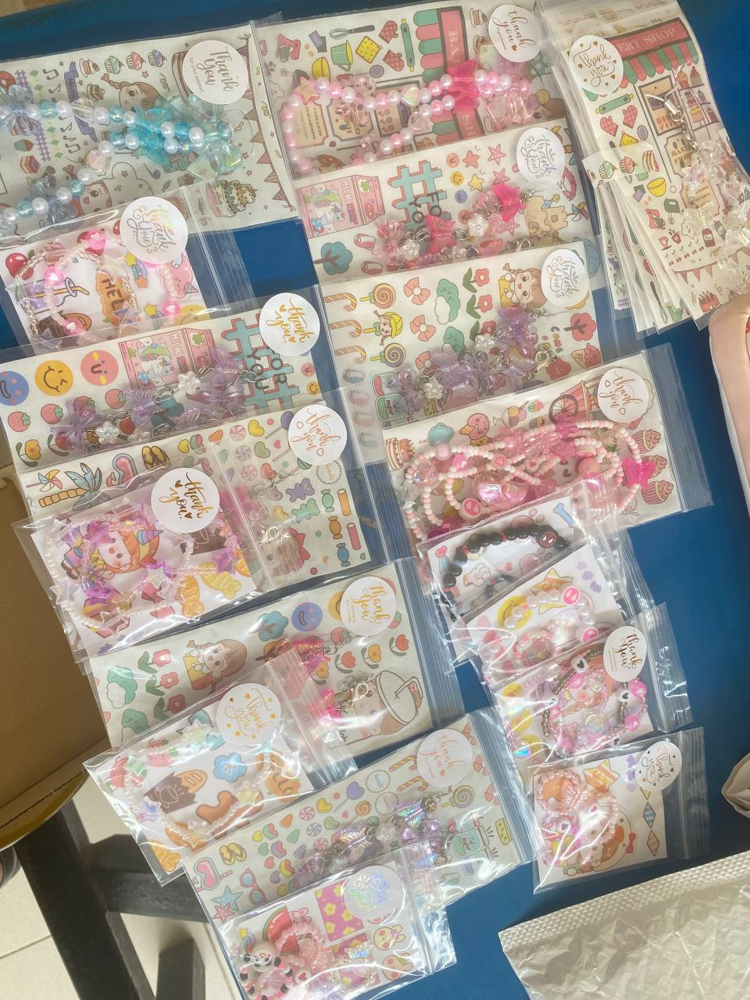

MY EXPERIENCE
Hello friends, I want to share how I tried to earn money from a young age and my work experience since I was 17 years old.
These experiences taught me responsibility and gave me valuable skills for the future.
| Image |
Description |
|

|
I worked as a caterer for weddings when i was 17. I earned RM 60 per day. It was my first job, and it taught me the value of hard work and saving money.
|
|
|
I worked as a salesperson at Sakan Berhad after i spm. I learned to interact with customers, adapt to workplace rules, and the satisfaction of earning my own income.
|
|

|
I started selling phone accessories, bracelets, and lanyards handmade by me. It was a great way to earn pocket money while pursuing my diploma.
|
These are some of the jobs and businesses I engaged in as a student. Working has taught me discipline, allowed me to meet amazing people, and gave me confidence in my abilities.
Don't be afraid to explore the world of work – it's full of valuable lessons and opportunities!